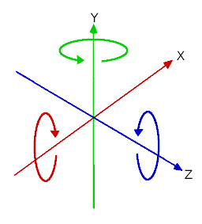
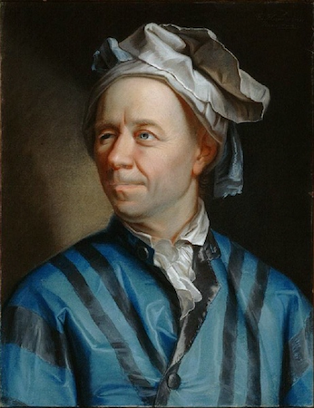
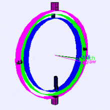
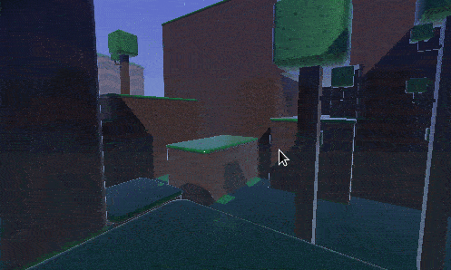
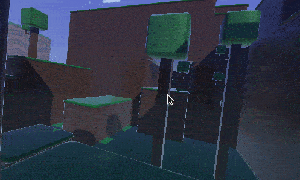
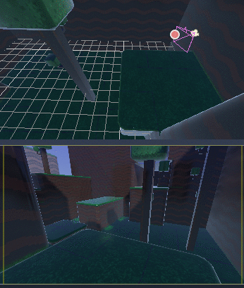
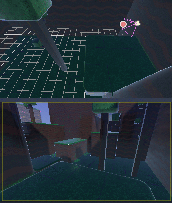
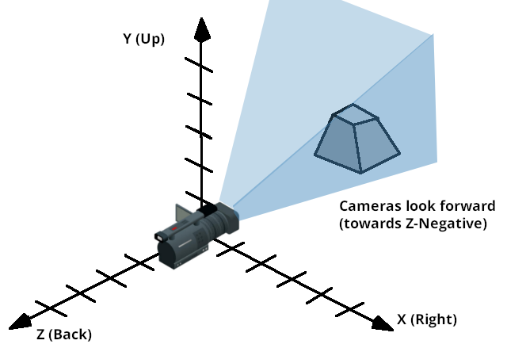
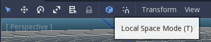
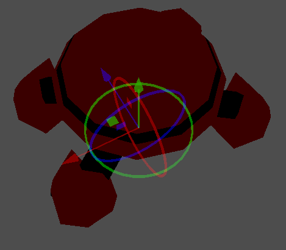

Sử dụng transform 3D
Giới thiệu
Nếu bạn chưa từng làm game 3D, làm việc với phép xoay trong ba chiều ban đầu có thể gây bối rối. Khi chuyển từ 2D sang, lối suy nghĩ tự nhiên là kiểu "Ồ, nó cũng giống xoay trong 2D thôi, chỉ khác là giờ phép xoay diễn ra theo X, Y và Z".
Ban đầu, điều này có vẻ dễ. Với các game đơn giản, lối suy nghĩ này thậm chí có thể là đủ. Đáng tiếc là nó thường không đúng.
Góc trong ba chiều thường được gọi là "góc Euler" (Euler Angles).

Góc Euler được nhà toán học Leonhard Euler giới thiệu vào đầu những năm 1700.

Cách biểu diễn phép xoay 3D này mang tính đột phá vào thời điểm đó, nhưng nó có một số nhược điểm khi dùng trong phát triển game (điều có thể đoán trước từ một ông đội chiếc mũ ngộ nghĩnh). Mục đích của tài liệu này là giải thích lý do, đồng thời phác thảo các phương pháp tốt nhất khi làm việc với transform trong lập trình game 3D.
Vấn đề của góc Euler
Mặc dù việc mỗi trục có một góc xoay có vẻ trực quan, sự thật là nó không thực tế.
Thứ tự trục
Lý do chính là không có cách duy nhất để dựng một hướng (orientation) từ các góc. Không có hàm toán học chuẩn nào nhận tất cả các góc cùng lúc và tạo ra một phép xoay 3D thực sự. Cách duy nhất để tạo hướng từ các góc là xoay đối tượng lần lượt từng góc, theo một thứ tự tùy ý.
Có thể làm điều này bằng cách xoay theo X trước, rồi Y và sau đó là Z. Hoặc, bạn có thể xoay theo Y trước, rồi Z và cuối cùng là X. Cách nào cũng được, nhưng tùy theo thứ tự, hướng cuối cùng của đối tượng không nhất thiết giống nhau. Thật vậy, điều này có nghĩa là có nhiều cách dựng một hướng từ 3 góc khác nhau, tùy thuộc vào thứ tự của các phép xoay.
Dưới đây là hình minh họa các trục xoay (theo thứ tự X, Y, Z) trong một gimbal (từ Wikipedia). Như bạn thấy, hướng của mỗi trục phụ thuộc vào phép xoay của trục trước đó:

Có thể bạn đang thắc mắc điều này ảnh hưởng đến bạn như thế nào. Hãy xem một ví dụ thực tế:
Hãy tưởng tượng bạn đang làm một bộ điều khiển góc nhìn thứ nhất (ví dụ game FPS). Di chuyển chuột sang trái và phải điều khiển góc nhìn song song với mặt đất, còn di chuyển lên xuống sẽ đưa tầm nhìn của người chơi lên và xuống.
Trong trường hợp này, để đạt hiệu ứng mong muốn, phép xoay phải được áp dụng trước tiên theo trục Y ("hướng lên" trong trường hợp này, vì Godot dùng hướng "Y-Up"), sau đó là phép xoay theo trục X.

Nếu ta áp dụng phép xoay theo trục X trước, rồi mới đến Y, hiệu ứng sẽ không như mong muốn:

Tùy theo loại game hoặc hiệu ứng mong muốn, thứ tự áp dụng phép xoay các trục có thể khác nhau. Vì vậy, chỉ áp dụng phép xoay theo X, Y và Z là chưa đủ: bạn còn cần một thứ tự xoay.
Nội suy
Một vấn đề khác khi dùng góc Euler là nội suy. Hãy tưởng tượng bạn muốn chuyển tiếp giữa hai vị trí camera hoặc kẻ địch khác nhau (bao gồm cả góc xoay). Một cách hợp lý để tiếp cận là nội suy các góc từ vị trí này sang vị trí tiếp theo. Ta sẽ mong nó trông như thế này:

Nhưng điều này không phải lúc nào cũng cho hiệu ứng như mong đợi khi dùng góc:

Camera thực ra đã xoay theo hướng ngược lại!
Có một vài lý do khiến điều này xảy ra:
Phép xoay không ánh xạ tuyến tính sang hướng, nên nội suy chúng không phải lúc nào cũng cho đường đi ngắn nhất (tức là đi từ
270đến0độ không giống đi từ270đến360, dù các góc này tương đương nhau).Hiện tượng gimbal lock xảy ra (trục xoay đầu tiên và cuối cùng thẳng hàng, nên mất đi một bậc tự do). Xem trang Wikipedia về Gimbal Lock để có giải thích chi tiết về vấn đề này.
Nói không với góc Euler
Kết quả của tất cả những điều trên là bạn không nên dùng thuộc tính rotation của các node class_Node3D trong Godot cho game. Nó tồn tại chủ yếu để dùng trong trình chỉnh sửa, để nhất quán với engine 2D, và cho các phép xoay đơn giản (thường chỉ một trục, hoặc hai trục trong những trường hợp hạn chế). Dù có thể bị cám dỗ, đừng dùng nó.
Thay vào đó, có một cách tốt hơn để giải quyết các vấn đề về xoay của bạn.
Giới thiệu về transform
Godot dùng kiểu dữ liệu class_Transform3D cho hướng. Mỗi node class_Node3D có một thuộc tính transform tương đối với transform của node cha, nếu node cha là kiểu dẫn xuất từ Node3D.
Bạn cũng có thể truy cập transform theo tọa độ thế giới qua thuộc tính global_transform.
Một transform có một class_Basis (thuộc tính con transform.basis), gồm ba vector class_Vector3. Chúng được truy cập qua thuộc tính transform.basis và có thể truy cập trực tiếp bằng transform.basis.x, transform.basis.y, và transform.basis.z. Mỗi vector chỉ theo hướng mà trục của nó đã được xoay, nên chúng mô tả hiệu quả toàn bộ phép xoay của node. Tỷ lệ (miễn là đồng đều) cũng có thể suy ra từ độ dài của các trục. Một basis cũng có thể được hiểu là một ma trận 3x3 và dùng dưới dạng transform.basis[x][y].
Một basis mặc định (chưa sửa đổi) tương tự như:
var basis = Basis()
# Contains the following default values:
basis.x = Vector3(1, 0, 0) # Vector pointing along the X axis
basis.y = Vector3(0, 1, 0) # Vector pointing along the Y axis
basis.z = Vector3(0, 0, 1) # Vector pointing along the Z axis
// Due to technical limitations on structs in C# the default
// constructor will contain zero values for all fields.
var defaultBasis = new Basis();
GD.Print(defaultBasis); // prints: ((0, 0, 0), (0, 0, 0), (0, 0, 0))
// Instead we can use the Identity property.
var identityBasis = Basis.Identity;
GD.Print(identityBasis.X); // prints: (1, 0, 0)
GD.Print(identityBasis.Y); // prints: (0, 1, 0)
GD.Print(identityBasis.Z); // prints: (0, 0, 1)
// The Identity basis is equivalent to:
var basis = new Basis(Vector3.Right, Vector3.Up, Vector3.Back);
GD.Print(basis); // prints: ((1, 0, 0), (0, 1, 0), (0, 0, 1))
Đây cũng tương đương với một ma trận đơn vị 3x3.
Theo quy ước OpenGL, X là trục Phải, Y là trục Lên và Z là trục Tiến.
Cùng với basis, một transform còn có một origin. Đây là một Vector3 xác định transform này cách gốc tọa độ thực (0, 0, 0) bao xa. Kết hợp basis với origin, một transform biểu diễn hiệu quả một phép tịnh tiến, xoay và co giãn duy nhất trong không gian.

Một cách để hình dung transform là nhìn vào gizmo 3D của một đối tượng khi ở chế độ "local space".

Các mũi tên của gizmo hiển thị các trục X, Y, và Z (lần lượt màu đỏ, xanh lá và xanh dương) của basis, còn tâm của gizmo nằm ở origin của đối tượng.

Để biết thêm về toán học của vector và transform, vui lòng đọc các bài hướng dẫn Toán vector.
Thao tác với transform
Tất nhiên, transform không dễ thao tác như góc và có những vấn đề riêng.
Bạn có thể xoay một transform, hoặc bằng cách nhân basis của nó với một basis khác (gọi là tích lũy), hoặc bằng cách dùng các phương thức xoay.
var axis = Vector3(1, 0, 0) # Or Vector3.RIGHT
var rotation_amount = 0.1
# Rotate the transform around the X axis by 0.1 radians.
transform.basis = Basis(axis, rotation_amount) * transform.basis
# shortened
transform.basis = transform.basis.rotated(axis, rotation_amount)
Transform3D transform = Transform;
Vector3 axis = new Vector3(1, 0, 0); // Or Vector3.Right
float rotationAmount = 0.1f;
// Rotate the transform around the X axis by 0.1 radians.
transform.Basis = new Basis(axis, rotationAmount) * transform.Basis;
// shortened
transform.Basis = transform.Basis.Rotated(axis, rotationAmount);
Transform = transform;
Một phương thức trong Node3D giúp đơn giản hóa việc này:
# Rotate the transform around the X axis by 0.1 radians.
rotate(Vector3(1, 0, 0), 0.1)
# shortened
rotate_x(0.1)
// Rotate the transform around the X axis by 0.1 radians.
Rotate(new Vector3(1, 0, 0), 0.1f);
// shortened
RotateX(0.1f);
Thao tác này xoay node tương đối với node cha.
Để xoay tương đối với không gian đối tượng (transform của chính node), hãy dùng:
# Rotate around the object's local X axis by 0.1 radians.
rotate_object_local(Vector3(1, 0, 0), 0.1)
// Rotate around the object's local X axis by 0.1 radians.
RotateObjectLocal(new Vector3(1, 0, 0), 0.1f);
Trục cần được định nghĩa trong hệ tọa độ cục bộ của đối tượng. Ví dụ, để xoay quanh các trục X, Y hoặc Z cục bộ của đối tượng, hãy dùng Vector3.RIGHT cho trục X, Vector3.UP cho trục Y, và Vector3.FORWARD cho trục Z.
Lỗi độ chính xác
Thực hiện liên tiếp các phép toán trên transform sẽ dẫn đến mất độ chính xác do lỗi dấu phẩy động. Điều này có nghĩa là tỷ lệ của mỗi trục có thể không còn chính xác là 1.0, và các trục có thể không còn vuông góc chính xác 90 độ với nhau.
Nếu một transform được xoay mỗi frame, cuối cùng nó sẽ bắt đầu bị biến dạng theo thời gian. Điều này là không thể tránh khỏi.
Có hai cách khác nhau để xử lý. Cách thứ nhất là trực chuẩn hóa (orthonormalize) transform sau một khoảng thời gian (có thể mỗi frame một lần nếu bạn sửa nó mỗi frame):
transform = transform.orthonormalized()
transform = transform.Orthonormalized();
Thao tác này sẽ khiến tất cả các trục có độ dài 1.0 trở lại và vuông góc 90 độ với nhau. Tuy nhiên, mọi tỷ lệ đã áp dụng cho transform sẽ bị mất.
Bạn được khuyên không nên co giãn các node sẽ bị thao tác; thay vào đó hãy co giãn các node con của chúng (chẳng hạn MeshInstance3D). Nếu bắt buộc phải co giãn node, hãy áp dụng lại tỷ lệ ở cuối:
transform = transform.orthonormalized()
transform = transform.scaled(scale)
transform = transform.Orthonormalized();
transform = transform.Scaled(scale);
Lấy thông tin
Đến đây có thể bạn đang nghĩ: "Được rồi, nhưng làm sao để lấy góc từ transform?". Câu trả lời một lần nữa là: bạn không làm vậy. Bạn phải cố gắng hết sức để ngừng suy nghĩ theo góc.
Hãy tưởng tượng bạn cần bắn một viên đạn theo hướng người chơi đang nhìn. Chỉ cần dùng trục tiến.
# On RigidBody3D.
# Keep in mind that -Z is forward.
bullet.transform = transform
bullet.linear_velocity = -transform.basis.z * BULLET_SPEED
// On RigidBody3D.
// Keep in mind that -Z is forward.
bullet.Transform = Transform;
bullet.LinearVelocity = -Transform.Basis.Z * BulletSpeed;
Kẻ địch có đang nhìn người chơi không? Hãy dùng tích vô hướng (dot product) cho việc này (xem bài hướng dẫn Toán vector để hiểu về tích vô hướng):
# Get the direction vector from player to enemy
var direction = enemy.transform.origin - player.transform.origin
if direction.dot(enemy.transform.basis.z) > 0:
enemy.im_watching_you(player)
// Get the direction vector from player to enemy
Vector3 direction = enemy.Transform.Origin - player.Transform.Origin;
if (direction.Dot(enemy.Transform.Basis.Z) > 0)
{
enemy.ImWatchingYou(player);
}
Di chuyển ngang sang trái:
# On CharacterBody3D.
# Keep in mind that -X is left.
if Input.is_action_pressed("strafe_left"):
velocity = -transform.basis.x * MOVE_SPEED
move_and_slide()
// On CharacterBody3D.
// Keep in mind that -X is left.
if (Input.IsActionPressed("strafe_left"))
{
Velocity = -Transform.Basis.X * MoveSpeed;
}
MoveAndSlide();
Nhảy:
# On CharacterBody3D.
# Keep in mind that +Y is up.
if Input.is_action_just_pressed("jump"):
velocity.y = JUMP_SPEED
move_and_slide()
// On CharacterBody3D.
// Keep in mind that +Y is up.
if (Input.IsActionJustPressed("jump"))
{
Velocity = Vector3.Up * JumpSpeed;
}
MoveAndSlide();
Mọi hành vi và logic thông thường đều có thể thực hiện chỉ với vector.
Đặt thông tin
Tất nhiên, có những trường hợp bạn muốn đặt thông tin vào một transform. Hãy tưởng tượng một bộ điều khiển góc nhìn thứ nhất hoặc một camera quay quanh. Những trường hợp đó chắc chắn được thực hiện bằng góc, vì bạn thực sự muốn các phép biến đổi diễn ra theo một thứ tự cụ thể.
Trong những trường hợp như vậy, hãy giữ các góc và phép xoay bên ngoài transform và đặt chúng mỗi frame. Đừng cố truy xuất và tái sử dụng chúng vì transform không được thiết kế để dùng theo cách này.
Ví dụ về nhìn xung quanh, kiểu FPS:
# accumulators
var rot_x = 0
var rot_y = 0
func _input(event):
if event is InputEventMouseMotion and event.button_mask & 1:
# modify accumulated mouse rotation
rot_x -= event.screen_relative.x * LOOKAROUND_SPEED
rot_y -= event.screen_relative.y * LOOKAROUND_SPEED
transform.basis = Basis() # reset rotation
rotate_object_local(Vector3(0, 1, 0), rot_x) # first rotate in Y
rotate_object_local(Vector3(1, 0, 0), rot_y) # then rotate in X
// accumulators
private float _rotationX = 0f;
private float _rotationY = 0f;
public override void _Input(InputEvent @event)
{
if (@event is InputEventMouseMotion mouseMotion)
{
// modify accumulated mouse rotation
_rotationX -= mouseMotion.ScreenRelative.X * LookAroundSpeed;
_rotationY -= mouseMotion.ScreenRelative.Y * LookAroundSpeed;
// reset rotation
Transform3D transform = Transform;
transform.Basis = Basis.Identity;
Transform = transform;
RotateObjectLocal(Vector3.Up, _rotationX); // first rotate about Y
RotateObjectLocal(Vector3.Right, _rotationY); // then rotate about X
}
}
Như bạn thấy, trong những trường hợp như vậy, việc giữ phép xoay bên ngoài rồi dùng transform làm hướng cuối cùng thậm chí còn đơn giản hơn.
Nội suy bằng quaternion
Nội suy giữa hai transform có thể được thực hiện hiệu quả bằng quaternion. Bạn có thể tìm thêm thông tin về cách quaternion hoạt động ở nhiều nơi khác trên Internet. Về mặt sử dụng thực tế, chỉ cần hiểu rằng công dụng chính của chúng gần như là nội suy theo đường gần nhất. Nghĩa là, nếu bạn có hai phép xoay, quaternion sẽ cho phép nội suy mượt mà giữa chúng theo trục gần nhất.
Chuyển đổi một phép xoay sang quaternion rất đơn giản.
# Convert basis to quaternion, keep in mind scale is lost
var a = Quaternion(transform.basis)
var b = Quaternion(transform2.basis)
# Interpolate using spherical-linear interpolation (SLERP).
var c = a.slerp(b,0.5) # find halfway point between a and b
# Apply back
transform.basis = Basis(c)
// Convert basis to quaternion, keep in mind scale is lost
var a = new Quaternion(transform.Basis);
var b = new Quaternion(transform2.Basis);
// Interpolate using spherical-linear interpolation (SLERP).
var c = a.Slerp(b, 0.5f); // find halfway point between a and b
// Apply back
transform.Basis = new Basis(c);
Tài liệu tham khảo kiểu class_Quaternion có thêm thông tin về kiểu dữ liệu này (nó cũng có thể tích lũy transform, biến đổi điểm, v.v., dù những việc này ít được dùng hơn). Nếu bạn nội suy hoặc áp dụng phép toán lên quaternion nhiều lần, hãy nhớ rằng cuối cùng chúng cần được chuẩn hóa. Nếu không, chúng cũng sẽ gặp lỗi độ chính xác số học.
Quaternion hữu ích khi nội suy camera/đường đi/v.v., vì kết quả sẽ luôn chính xác và mượt mà.
Transform là bạn của bạn
Với hầu hết người mới bắt đầu, làm quen với transform có thể mất một khoảng thời gian. Tuy nhiên, một khi đã quen, bạn sẽ thấy được sự đơn giản và sức mạnh của chúng.
Đừng ngần ngại hỏi về chủ đề này trong bất kỳ cộng đồng trực tuyến nào của Godot và, khi đã đủ tự tin, hãy giúp đỡ người khác!